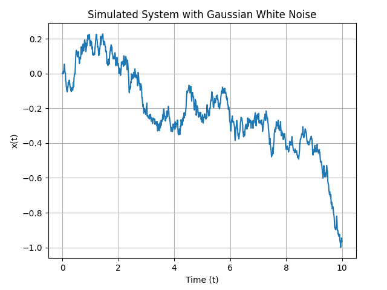

11.1 扩散模型的数学基础
理解扩散 (Diffusion) 与逆扩散 (Reverse Diffusion) 的数学原理！
创建日期: 2025-02-16
在本教程中，我们介绍了扩散生成模型的数学基础，目标是以下几点：
用神经网络近似得分函数；
从扩散模型中抽样。
扩散生成模型是一种从分布中生成样本的方法；它与其它方法（如生成对抗网络 (GAN) 和变分自动编码器 (VAE) 有很大不同。值得注意的是，它是 OpenAI 最近的 DALL·E 2 系统的核心元素之一，该系统用于将自然语言描述转换为详细图像。
扩散生成模型使用如下思想：来自某些分布（例如图像）的样本逐渐受到越来越多的噪声的破坏，直到它们变成无法识别的静态 - 这就是扩散。然后我们反转这一过程，以便我们可以将无法识别的静态变成来自我们感兴趣的分布的样本。因为很容易对无法识别的静态进行采样，所以映射使我们能够轻松地从目标分布中进行采样。
我们将重点关注扩散生成模型的基础，并且主要使用简单的示例用于分布分析。
11.1.1 动机
生成模型是统计学和机器学习的一个领域，涉及从给定的数据集采样的概率分布。通过学习这样的分布（例如人脸图片），我们可以从中采样新的数据 - 例如一张新的人脸图像。
生成建模有不同的方法，包括使用生成对抗网络 (GAN) 和变分自动编码器 (VAE) 。一种较新的方法是向样本添加大量噪声，然后学习消除噪声。通过这种方式，我们可以学习将纯噪声转换为我们感兴趣的某个分布的样本。因为生成各种纯噪声岩本很容易，而且每个样本都通过我们的噪声消除映射转换为目标分布的样本，所以我们有一个生成模型。
这种生成建模的方法有各种吸引人的特点，其中一个值得注意的特点是，我们不必直接学习概率分布，而是可以学习一个有时称为 得分 (Score) ，下面是对数概率密度函数相对于 \(x\) 的梯度：
\(s(x) := \nabla_xlogp(x)\)
这样我们就避免了必须学习概率密度的标准化常数，它通常是一项麻烦的任务。
我们可以用基于扩散的生成模型做什么？以下是一些常见的事情：
类别生成（给定一个类别标签，生成一个新的样本）；
修复（填补部分损坏图像的缺失部分）；
着色（为灰度图像添加合理的颜色）。
11.1.2 正向扩散和随机过程
我们如何适当地向分布样本添加噪声？尽快对此的看法各不相同，但最近的研究已经统一了不同的方法。总的来说，关于如何做到这一点的，各种想法都相当于对给定的分布样本进行某种扩散过程。更一般地说，我们可以想象将某种随机过程（由随机微分方程或 SDE 定义）应用于分布样本。
11.1.2.1 扩散基础知识
让我们看一下扩散的基础知识，一维扩散过程（在实线上）可以用 随机微分方程 (Stochastic Differential Equation, SDE) 来定义：
\(\dot{x} = \sigma \cdot \eta(t)\)
其中 \(\sigma > 0 \) 是常数，\(\eta(t)\) 表示高斯白噪声。
注：\(\dot{x}\) 表示的是 \(x\) 的导数。
注：高斯函数表达式 \(f(x) = A e^{-\frac{(x - \mu)^2}{2\sigma^2}}\) ，其中 \(\mu\) 是均值，\(\sigma\) 是标准差。
为了计算并通过数据说明上述方程，我们可以使用数值方法对其进行模拟。假设 \(\sigma = 2\) ，并且 \(\eta(t)\) 是一个标准的高斯白噪声。那么计算步骤如下：
设定初始条件，比如 \(x(0) = 0\) ；
使用离散时间步长（例如 \(\Delta{t} = 0.01\) ），模拟 \(x(t)\) 在时间 \(t\) 上的变化；
生成每个时间步的高斯白噪声增量 \(\eta(t)\) ；
计算每个时间步的变化 \(\dot{x}(t) = \sigma \cdot \eta(t)\) ；
更新 \(x(t)\) 的值：\(x(t + \Delta{t}) = x(t) + \dot{x}(t)\Delta{t}\) 。
import numpy
from matplotlib import pyplot
sigma = 2
duration = 10
dt = 0.01
num = int(duration / dt)
t = numpy.linspace(0, duration, num)
x = numpy.zeros(num)
rng = numpy.random.default_rng(0)
eta = rng.standard_normal(num)
for i in range(1, num):
dot_x = sigma * eta[i]
x[i] = x[i-1] + dot_x * dt
pyplot.plot(t, x)
pyplot.title('Simulated System with Gaussian White Noise')
pyplot.xlabel('Time (t)')
pyplot.ylabel('x(t)')
pyplot.grid(True)
pyplot.subplots_adjust(top=0.92, right=0.92)
pyplot.show()
这到底是什么意思呢？我们可以将上述表达式具体化，定义一个很小的离散增量 \(\Delta{t}\) ：
其中 \(r \sim \mathcal{N}(0, 1)\) 是标准正态分布的样本。Euler-Maruyama 是个很好的示例，Euler-Maruyama 方法是数值解随机微分方程的一种显示欧拉方法。它是标准欧拉方法在随机过程下的推广，用于求解具有布朗运动或噪声项的微分方程。标准形式的 SDE 为：
其中 \(X_t\) 是随机过程，\(f(X_t, t)\) 是漂移项，表示系统确定性部分，\(g(X_t, t)\) 是扩散项，表示噪声的影响，\(W_t\) 是布朗运动。给定时间步长 \(\Delta{t}\) ， Euler-Maruyama 方法的离散化形式为：
\(f(X_n, t_n)\) 近似表示在时间步 \(t_n\) 系统的变化率。
上述扩散描述对于模拟很有用。给定一个数字 \(x\) ，我们可以使用上述更新规则使其经过一个时间步的扩散。但是互补的观点描述概率密度 \(p(x, t)\) ，系统在 \(t\) 时刻 \(x\) 位置的概率，随着时间而变化。
尤其是 \(p(x, t)\) 随着著名的扩散等式变化：
你可能习惯于看到这个方程具有扩散常数 \(D\) 而不是参数 \(\sigma\) ，它们之间的转换关系为 \(D := \frac{\sigma^2}{2}\) 。
给定 \(\delta\) 函数初始条件 \(p(x, 0) = \delta(x - x_0)\) （也就是说系统在初始 \(x_0\) 位置） ，那么扩散方程的通解为：
给定任意初始条件 \(p(x, 0) = p_{0}(x)\) ，扩散函数的通解是：
11.1.2.2 随机微分方程基础
扩散只是由随机微分方程控制的随机过程的一个特别简单的例子。最一般的随机微分方程如下所示：
其中 \(f(x, t)\) 和 \(g(x, t)\) 是函数，\(\eta(t)\) 是高斯白噪声。函数 \(f(x,t )\) 是漂移项，描述了 \(x(t)\) 随时间的变化。\(g(x, t)\) 是噪声或者扩散项，描述 \(x(t)\) 的随机波动。
它意味着什么？不像扩散那样，\(g(x, t)\) 是常数，使上述表达式定义明确还需要一些其它数学知识。为了我们的目的，选择限免的公式进行描述：
\(r \sim \mathcal{N}(0, 1)\) 是标准正态分布的样本。这是更通用的 Euler-Maruyama 方法（尽管考虑到我们目前只在一维上工作，它仍然不是最通用的形式），
扩散方程的类似方程是 Fokker-Planck 等式，它描述了 \(p(x, t)\) 在随机微分方程下随时间的变化。其表达式可以写成：
绝大多数 Fokker-Planck 等式都非常难解决，因此我们无法获得 \(p(x, t)\) 准确的解。我们可以解决的 \(p(x, t)\) 只包含扩散，和 Ornstein-Uhlenbeck-like 过程，该过程使反向随机过程，以下是一维的示例：
对于初始条件 \(p(x, 0) = \delta(x - x_0)\) ，它的解为：
其中：
\(s(t)^2 := \sigma^2(1 - e^{-2t/\tau})\)
通用的 Ornstein-Uhlenbeck-like 解决方法（初始分布 \(p(x, 0) = p_0(x)\)）：
Ornstein-Uhlenbeck 过程与严格扩散过程不同之处在于，Ornstein-Uhlenbeck 过程的长期行为会丢失所有关于其初始条件的记忆。也就是说，随着 \(t\) 时间的增加，\(p(x, t)\) 越来越不依赖 \(p_0(x)\) 。
扩散过程：没有回归到某个平衡值得趋势，状态得变化完全依赖于随机噪声。OU 过程：具有回归到均值得趋势，状态变化不仅受随机扰动影响，还有回归到某个平衡点得力量。
11.1.2.3 基础示例
让我们看看模拟一维扩散（一种特别简单的随机过程）会是什么样子。也可以使用代码来模拟其它 SDE，例如 OU 过程。
以下是一些实用函数，前几个函数用于正向模拟 1D 扩散（尽管 forward_SDE_simulation 可用于模拟更通用的 SDE ）。
11.1.2.4 通用 SDE
11.1.3 逆扩散
我们如何消除在正向扩散过程中添加到样本中的噪声？虽然这有点违背直觉 -- 例如我们期望观察到奶油和咖啡通过扩散混合，但不希望它们自发分离 -- 但事实证明，由 SDE 控制的随机过程的时间反转在数学上是很简单的事。时间反转过程本身就是由 SDE 控制的随机过程，器概率密度根据 方程随时间演变。